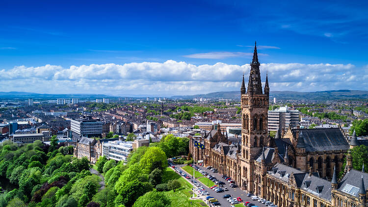

The City
Glasgow is a port city on the River Clyde in Scotland. It's famed for its Victorian and art nouveau architecture, a rich legacy of the city's 18th–20th-century prosperity due to trade and shipbuilding. Today it's a national cultural hub, home to institutions including the Scottish Opera, Scottish Ballet and National Theatre of Scotland, as well as acclaimed museums and a thriving music scene.
Follow this link for information on Glasgow's past.
Things To Do
To find exciting things to do during your visit to Glasgow click here.
My top 5 picks:
- See a gig at King Tut's
- Visit the Barra's Art and Design (BAaD) venue and container yard to enjoy food, drink and entertainment
- Wander the necropolis and take in panoramic views of the city centre
- Head to Glasgow Green to visit the People's Palace and Templeton's Carpet Factory
- Go for dinner on Ashton Lane
One of Glasgow's main tourist attraction is Glasgow University's main building situated on the edge of Kelvingrove Park
